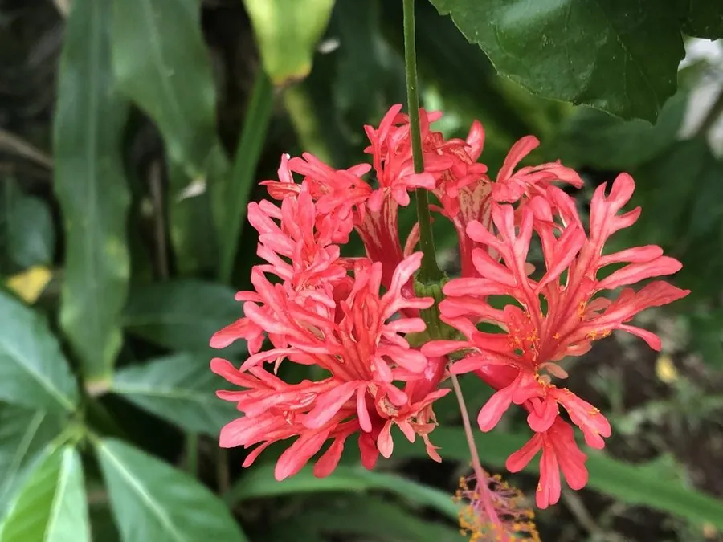

灌木与花木 · 植物界
朱槿 Hibiscus rosa-sinensis

热带与亚热带地区常见的常绿灌木，花大色艳、花期几乎全年，花蕊长伸如金丝，是马来西亚等国的国花。
- 分类
- 门被子植物门纲木兰纲目锦葵目科锦葵科属木槿属
- 栖息环境
- 热带与亚热带地区的平原、庭院与村旁，喜高温多湿，不耐寒
- 地理分布
- 原产中国南部及东南亚，中国华南各地栽培，世界热带地区广泛引种
- 保护级别
- 暂无评估；中国未列入国家重点保护野生植物名录
物种志
朱槿为常绿灌木，高可达 3 m，枝条直立，小枝绿色。叶片互生，卵形至阔卵形，边缘具粗齿，叶面有光泽。花期长，在温暖地区可全年开花，花单生于上部叶腋，花径 8–15 cm，花冠漏斗形，花瓣 5 枚，有红、橙、粉、白等色，重瓣品种常见，雄蕊柱长而突出，顶端生多数花药，形如金丝；蒴果卵圆形，成熟时开裂。
朱槿原产中国南部及东南亚热带地区，喜温暖湿润、光照充足，不耐寒，适宜疏松肥沃、排水良好的微酸性土壤。因花大色艳、开花繁茂，是热带亚热带地区最常见的观赏花木之一，马来西亚、苏丹、斐济等国将其定为国花，中国广西、广东等地也广泛栽培。花可作蔬菜食用，根、叶与花可入药，有清热解毒之效；茎皮纤维可代麻用，是优良的绿篱与庭院观赏植物。
形态与习性
- 株高可达 3 m，枝条直立
- 花期全年可开，以 5–10 月最盛
- 果期10–12 月，蒴果卵圆形
- 光照喜光，不耐长期荫蔽
- 水分喜湿润，怕积水
- 土壤微酸性、疏松肥沃的壤土
- 主要用途庭院观赏、绿篱、花可食、茎皮纤维代麻
趣味知识
- 朱槿的花蕊柱很长，顶端密生花药，伸出花冠之外，像一根金丝。
- 马来西亚把朱槿定为国花，当地称它为“大红花”。
- 朱槿在温暖的南方几乎全年开花，是花期最长的观赏花木之一。
- 朱槿的茎皮纤维柔韧，可代替麻类制作绳索与织物。